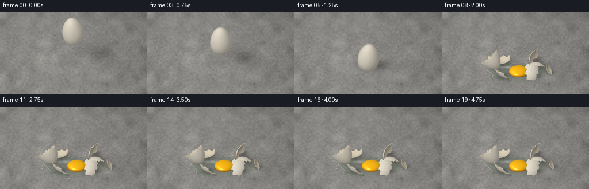
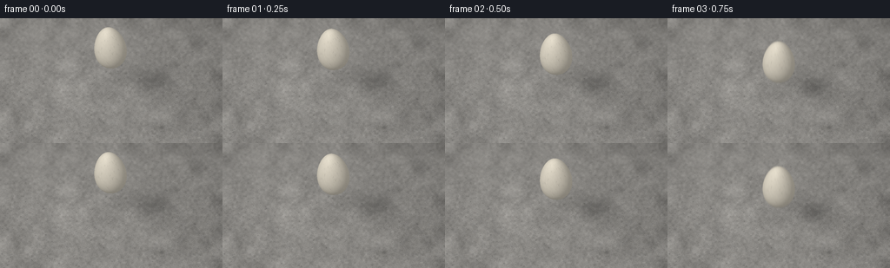

CODING AGENTS AS PIXEL WORLD MODELS
traex/GPT-6.1-Sol · material_0013
点击播放 · 原生 RGB 像素
逐轮保存的候选
回放视频、检查图与代码变化。
每份候选均可单独播放。实际图片检查记录在下方工具轨迹中。
候选 01播放与检查图
点击播放 · 原生 RGB 像素


展开代码变化
--- 上一保存版本
+++ 本次保存版本
@@ -0,0 +1,400 @@
+"""Deterministic RGB synthesis of an egg breaking on concrete.
+Only local mathematical geometry, NumPy and Pillow are used for rendering.
+"""
+from pathlib import Path
+import json
+import math
+import numpy as np
+from PIL import Image, ImageDraw, ImageFilter
+from artifact_io import save
+
+ROOT = Path(__file__).resolve().parent
+SPEC = json.loads((ROOT / 'task_spec.json').read_text())
+W, H = SPEC['width'], SPEC['height']
+SS = 3
+RW, RH = W*SS, H*SS
+SCALE = 39.5 * SS
+CX, GROUND = 128.0*SS, 103.0*SS
+ELEV = .61
+SN, CS = math.sin(ELEV), math.cos(ELEV)
+VIEW = np.array([0., -CS, SN])
+LIGHT = np.array([-.46, -.48, .75]); LIGHT /= np.linalg.norm(LIGHT)
+HALF = (VIEW+LIGHT); HALF /= np.linalg.norm(HALF)
+YPIX, XPIX = np.mgrid[:RH, :RW].astype(np.float32)
+FX = (XPIX+.5-CX)/SCALE
+FY = (GROUND-YPIX-.5)/(SCALE*SN)
+FDEPTH = FY*CS
+RNG = np.random.default_rng(71428)
+
+
+def noise_field(ny, nx):
+ a = RNG.normal(0, 1, (ny, nx)).astype(np.float32)
+ return np.array(Image.fromarray(a, mode='F').resize((RW,RH), Image.Resampling.BICUBIC))
+
+
+def make_concrete():
+ broad = noise_field(12,20)
+ mids = noise_field(60,100)
+ fine = noise_field(210,360)
+ grit = RNG.normal(0,1,(RH,RW))
+ value = 131 + 5*broad + 4.5*mids + 3.5*fine + 2*grit
+ # A quiet, obliquely lit, continuous cast-concrete surface.
+ value += 7*(YPIX/RH) - 8*(XPIX/RW) + 7*np.exp(-((FX+1.8)/3)**2-((FY-1.7)/5)**2)
+ col = np.stack([value*1.015+1.8,value*1.005+1,value*.983],axis=-1)
+ base = Image.fromarray(np.clip(col,0,255).astype(np.uint8))
+ pores = Image.new('RGBA',(RW,RH)); d = ImageDraw.Draw(pores)
+ for i in range(2100):
+ x = float(RNG.uniform(-5,RW+5)); y = float(RNG.uniform(-5,RH+5))
+ r = float(RNG.uniform(.22,1.0)**2*SS)
+ ry = r*RNG.uniform(.35,.8)
+ shade = int(RNG.uniform(60,98))
+ alpha = int(RNG.uniform(18,76))
+ d.ellipse((x-r,y-ry,x+r,y+ry),fill=(shade,shade,shade-2,alpha))
+ if r > 1.7:
+ d.arc((x-r,y-ry,x+r,y+ry),0,140,fill=(202,198,188,38),width=1)
+ # Sparse embedded mineral flecks, not a tiled or moving noise texture.
+ for i in range(280):
+ x,y = RNG.uniform(0,RW),RNG.uniform(0,RH)
+ r=RNG.uniform(.4,1.7)*SS
+ points=[(x+r*math.cos(a)*RNG.uniform(.5,1),y+r*.52*math.sin(a)*RNG.uniform(.5,1)) for a in np.linspace(0,2*math.pi,6)[:-1]]
+ v=int(RNG.uniform(115,175)); d.polygon(points,fill=(v+3,v+1,v-3,int(RNG.uniform(25,70))))
+ base=Image.alpha_composite(base.convert('RGBA'),pores).convert('RGB')
+ # A nearly invisible old hairline in the distant slab, out of the impact area.
+ hair=Image.new('RGBA',(RW,RH)); hd=ImageDraw.Draw(hair)
+ pts=[(0,48*SS),(20*SS,46*SS),(34*SS,40*SS),(48*SS,39*SS),(63*SS,33*SS)]
+ hd.line(pts,fill=(54,57,55,35),width=1)
+ base=Image.alpha_composite(base.convert('RGBA'),hair).convert('RGB')
+ a=np.asarray(base,dtype=np.float32)
+ soft=np.asarray(base.filter(ImageFilter.GaussianBlur(.62*SS)),dtype=np.float32)
+ blur=np.clip((.6-YPIX/RH)*1.3,0,.62)[...,None]
+ a=a*(1-blur)+soft*blur
+ vignette=1-.10*((XPIX-CX)/(RW*.68))**2-.06*((YPIX-RH*.5)/(RH*.8))**2
+ return a*vignette[...,None]
+
+FLOOR=make_concrete()
+
+
+def Rx(a):
+ c,s=math.cos(a),math.sin(a);return np.array([[1,0,0],[0,c,-s],[0,s,c]])
+def Ry(a):
+ c,s=math.cos(a),math.sin(a);return np.array([[c,0,s],[0,1,0],[-s,0,c]])
+def Rz(a):
+ c,s=math.cos(a),math.sin(a);return np.array([[c,-s,0],[s,c,0],[0,0,1]])
+
+
+def egg_mesh():
+ nl, np_ = 48, 112
+ phi=np.arange(np_)*2*np.pi/np_
+ rim=1.46+.055*np.sin(7*phi+.5)+.035*np.sin(19*phi+1.2)+.018*np.sin(31*phi)
+ theta=np.empty((nl+1,np_))
+ for i in range(nl+1):
+ if i<=22: theta[i]=rim*(i/22)
+ else: theta[i]=rim+(np.pi-rim)*(i-22)/(nl-22)
+ ph=np.broadcast_to(phi,theta.shape)
+ radius=.465*np.sin(theta)*(1-.17*np.cos(theta))
+ verts=np.stack((radius*np.cos(ph),radius*np.sin(ph),.675*np.cos(theta)),axis=-1).reshape(-1,3)
+ dr=.465*(np.cos(theta)*(1-.17*np.cos(theta))+.17*np.sin(theta)**2)
+ dz=-.675*np.sin(theta)
+ norms=np.stack((-dz*np.cos(ph),-dz*np.sin(ph),dr),axis=-1).reshape(-1,3)
+ norms /= np.linalg.norm(norms,axis=1)[:,None]
+ faces=[]; labels=[]
+ for i in range(nl):
+ for j in range(np_):
+ jj=(j+1)%np_
+ for f in ((i*np_+j,(i+1)*np_+j,(i+1)*np_+jj),(i*np_+j,(i+1)*np_+jj,i*np_+jj)):
+ faces.append(f)
+ if i<22: label=0
+ elif i>40: label=6
+ else:
+ pc=(phi[j]+np.pi/np_+.09*np.sin(i*.83))%(2*np.pi)
+ label=1+min(4,int(pc/(2*np.pi/5)))
+ labels.append(label)
+ return verts,norms,np.array(faces,np.int32),np.array(labels)
+
+VERT,NORM,FACES,LABEL=egg_mesh()
+# Microtexture is attached to the shell, not screen space.
+SHELL_NOISE=RNG.normal(0,.008,len(VERT))
+SHELL_FRECKLES=np.where(RNG.random(len(VERT))<.027,RNG.uniform(.035,.095,len(VERT)),0)
+SHELL_ALBEDO=1+SHELL_NOISE-SHELL_FRECKLES
+
+
+def project(v):
+ return np.stack((CX+SCALE*v[:,0],GROUND-SCALE*(SN*v[:,1]+CS*v[:,2]),CS*v[:,1]-SN*v[:,2]),axis=-1)
+
+
+def material_colors(norms, localnorms, inside=False):
+ diff=np.maximum(0,norms@LIGHT)
+ hemi=.5+.5*norms[:,2]
+ if inside:
+ ambient=.48+.08*hemi
+ base=np.array([239.,226.,199.])
+ factor=ambient+.37*diff
+ spec=1.5*np.maximum(0,norms@HALF)**35
+ else:
+ base=np.array([242.,234.,216.])
+ factor=.53+.10*hemi+.32*diff
+ spec=3.5*np.maximum(0,norms@HALF)**26
+ return np.clip(base[None,:]*factor[:,None]+spec[:,None],0,255)
+
+
+def rasterize(img, depth, v, normals, faces, colors, cull=True):
+ screen=project(v)
+ facing=np.einsum('ij,j->i',normals,VIEW)
+ # Rasterize smooth-shaded triangles into the same depth field as the floor.
+ for tri in faces:
+ if cull and np.mean(facing[tri]) < -.005: continue
+ p=screen[tri]
+ xmin=max(0,int(np.floor(p[:,0].min()))); xmax=min(RW-1,int(np.ceil(p[:,0].max())))
+ ymin=max(0,int(np.floor(p[:,1].min()))); ymax=min(RH-1,int(np.ceil(p[:,1].max())))
+ if xmin>xmax or ymin>ymax: continue
+ x0,y0=p[0,:2];x1,y1=p[1,:2];x2,y2=p[2,:2]
+ denom=(y1-y2)*(x0-x2)+(x2-x1)*(y0-y2)
+ if abs(denom)<1.e-9: continue
+ xx=XPIX[ymin:ymax+1,xmin:xmax+1]+.5
+ yy=YPIX[ymin:ymax+1,xmin:xmax+1]+.5
+ a=((y1-y2)*(xx-x2)+(x2-x1)*(yy-y2))/denom
+ b=((y2-y0)*(xx-x2)+(x0-x2)*(yy-y2))/denom
+ c=1-a-b
+ zz=a*p[0,2]+b*p[1,2]+c*p[2,2]
+ old=depth[ymin:ymax+1,xmin:xmax+1]
+ mask=(a>=-1e-6)&(b>=-1e-6)&(c>=-1e-6)&(zz<old+1e-5)
+ if not np.any(mask):continue
+ cc=colors[tri]
+ rgb=a[...,None]*cc[0]+b[...,None]*cc[1]+c[...,None]*cc[2]
+ dest=img[ymin:ymax+1,xmin:xmax+1]
+ dest[mask]=rgb[mask];old[mask]=zz[mask]
+
+
+def shadow(img, x,y,z,rx=.46,ry=.43,strength=.31):
+ # The finite source makes airborne shadows broad and contact shadows crisp.
+ px=x-z*LIGHT[0]/LIGHT[2];py=y-z*LIGHT[1]/LIGHT[2]
+ blur=.075+z*.16
+ rxx=rx+blur; ryy=ry+blur
+ q=((FX-px)/rxx)**2+((FY-py)/ryy)**2
+ a=strength*np.exp(-q*2.0)/(1+z*.52)
+ img*=1-a[...,None]
+
+
+def render_egg(img,depth,t):
+ ti=1.28
+ z=2.15-(2.15-.675)*(t/ti)**2
+ tilt=-.12+.20*(t/ti)**1.5
+ rot=Ry(tilt)@Rx(.045)@Rz(.05*t)
+ x=-.035+.055*(t/ti)
+ v=VERT@rot.T+np.array([x,0,z])
+ n=NORM@rot.T
+ shadow(img,x,0,z,.46,.41,.43)
+ # Tightening contact occlusion is perceptible just before impact.
+ gap=max(0,z-.675)
+ if gap<.2:
+ shadow(img,x,0,.01,.33,.26,.16*(1-gap/.2))
+ colors=material_colors(n,NORM)*SHELL_ALBEDO[:,None]
+ rasterize(img,depth,v,n,FACES,colors)
+
+
+PIECES=[]
+FINALS=[(-.96,.19),(.96,.16),(.78,.63),(-.57,.73),(-.72,-.55),(.75,-.57),(1.55,-.22)]
+ANGLES=[(.32,2.42,-.16),(1.35,-.8,.45),(-.35,1.3,.4),(.7,-1.5,-.7),(1.45,.6,.8),(-1.15,-.7,-.4),(.65,.9,.7)]
+for label in range(7):
+ fs=FACES[LABEL==label]
+ ids=np.unique(fs)
+ center=VERT[ids].mean(axis=0)
+ edge_counts={}
+ for f in fs:
+ for a,b in ((f[0],f[1]),(f[1],f[2]),(f[2],f[0])):
+ e=tuple(sorted((int(a),int(b))));edge_counts[e]=edge_counts.get(e,0)+1
+ edges=[e for e,c in edge_counts.items() if c==1]
+ PIECES.append((fs,ids,center,np.array(edges)))
+
+
+def fragment_geometry(tau,k):
+ fs,ids,center,edges=PIECES[k]
+ p=1-np.exp(-3.7*tau)
+ ar=(1-np.exp(-4.3*tau))
+ ax,ay,az=ANGLES[k]
+ rot=Rz(az*ar)@Ry(ay*ar)@Rx(ax*ar)
+ local=(VERT-center)@rot.T
+ minz=local[ids,2].min()
+ start=center+np.array([.02,0,.675])
+ end=np.array(FINALS[k])
+ xy=start[:2]*(1-p)+end*p
+ vz=[.5,1.15,1.8,1.45,1.2,1.6,1.7][k]
+ floorz=-minz+.009
+ freez=start[2]+vz*tau-4.8*tau*tau
+ z=max(floorz,freez)
+ if freez<floorz:
+ land=[.48,.49,.57,.55,.40,.40,.45][k]
+ dt=max(0,tau-land)
+ z+=.045*np.exp(-5*dt)*abs(np.sin(13*dt))
+ v=local+np.array([xy[0],xy[1],z])
+ n=NORM@rot.T
+ inner_orig=VERT*np.array([.974,.974,.988])
+ inner=(inner_orig-center)@rot.T+np.array([xy[0],xy[1],z])
+ return v,n,inner,xy,z,rot
+
+
+def render_fragment(img,depth,tau,k,geom):
+ fs,ids,center,edges=PIECES[k]
+ v,n,inner,xy,z,rot=geom
+ colors=material_colors(n,NORM)*SHELL_ALBEDO[:,None]
+ innercolors=material_colors(-n,-NORM,inside=True)
+ # Both surfaces have actual depth: the broken crown reads as a hollow cup.
+ rasterize(img,depth,v,n,fs,colors)
+ rasterize(img,depth,inner,-n,fs,innercolors)
+ # Thin ivory fracture walls on all open edges.
+ m=len(v); allv=np.concatenate([v,inner]); alln=np.concatenate([n,-n])
+ rimfaces=[]
+ for a,b in edges:
+ rimfaces.extend(((a,b,m+b),(a,m+b,m+a)))
+ rimcol=np.tile(np.array([214.,200.,174.]),(2*m,1))
+ rasterize(img,depth,allv,alln,np.array(rimfaces),rimcol,cull=False)
+
+
+def white_liquid(img,depth,tau):
+ progress=1-np.exp(-3.9*tau)
+ rx=.13+1.27*progress;ry=.10+.70*progress
+ wx=FX-.06;wy=FY+.06
+ a=np.arctan2(wy/ry,wx/rx)
+ radial=np.sqrt((wx/rx)**2+(wy/ry)**2)
+ bound=1+.075*np.sin(3*a+1)+.055*np.sin(7*a-.4)+.026*np.sin(13*a+2)
+ bound+=.025*np.exp(-2.3*tau)*np.sin(11*a-9*tau)
+ q=radial/bound
+ cover=np.clip((1-q)*90+.5,0,1)
+ if not np.any(cover):return
+ # Transparent albumen retains the concrete grain; Fresnel at the meniscus.
+ wet=img*np.array([.82,.855,.83])+np.array([12.,12.5,10.])
+ broad=np.exp(-((FX+.43)/.5)**2-((FY-.29)/.095)**2)
+ broad2=np.exp(-((FX-.62)/.25)**2-((FY+.3)/.045)**2)
+ edge=np.exp(-((q-.975)/.02)**2)
+ edge_light=np.clip(.5-.55*np.cos(a)+.36*np.sin(a),0,1)
+ wet+=broad[...,None]*np.array([38.,39.,38.])
+ wet+=broad2[...,None]*np.array([25.,26.,25.])
+ wet+=edge[...,None]*(6+32*edge_light[...,None])
+ # The far boundary reflects the large light softly rather than a white outline.
+ contact=np.exp(-((q-1.012)/.012)**2)*.095
+ img*=1-contact[...,None]
+ img[:]=img*(1-cover[...,None])+wet*cover[...,None]
+ # Fluid is a few millimetres thick, with a real depth relative to fragments.
+ h=.016+.025*np.clip(1-q,0,1)
+ liquiddep=FDEPTH-h/SN
+ depth[:]=np.where(cover>.55,np.minimum(depth,liquiddep),depth)
+
+
+def ellipsoid(img,depth,center,radii,kind='yolk',opacity=1):
+ x,y,z=center;ax,ay,az=radii
+ # Each orthographic ray intersects an ellipsoid exactly.
+ ox=FX-x;oy=FY-y;oz=-z
+ dy=-CS;dz=SN
+ aa=dy*dy/(ay*ay)+dz*dz/(az*az)
+ bb=2*(oy*dy/(ay*ay)+oz*dz/(az*az))
+ cc=ox*ox/(ax*ax)+oy*oy/(ay*ay)+oz*oz/(az*az)-1
+ disc=bb*bb-4*aa*cc
+ mask=disc>=0
+ if not np.any(mask):return
+ root=np.sqrt(np.maximum(0,disc))
+ r=(-bb+root)/(2*aa)
+ zh=SN*r
+ yh=FY-CS*r
+ dep=yh*CS-zh*SN
+ mask&=(dep<depth)&(zh>0)
+ if not np.any(mask):return
+ nx=(FX-x)/(ax*ax);ny=(yh-y)/(ay*ay);nz=(zh-z)/(az*az)
+ ln=np.sqrt(nx*nx+ny*ny+nz*nz)+1e-10
+ nx/=ln;ny/=ln;nz/=ln
+ nl=np.maximum(0,nx*LIGHT[0]+ny*LIGHT[1]+nz*LIGHT[2])
+ nh=np.maximum(0,nx*HALF[0]+ny*HALF[1]+nz*HALF[2])
+ nv=np.clip(ny*VIEW[1]+nz*VIEW[2],0,1)
+ if kind=='yolk':
+ f=.50+.46*nl+.10*np.maximum(nz,0)
+ # Rich amber edges and a golden, translucently lit centre.
+ base=np.array([248.,163.,13.])
+ rgb=f[...,None]*base
+ rgb[:,:,0]+=12*(1-nv)
+ rgb[:,:,1]+=22*np.maximum(nz,0)
+ rgb[:,:,2]+=10*np.maximum(nz,0)
+ spec=nh**100
+ rgb+=spec[...,None]*np.array([93.,105.,103.])
+ broad=nh**16
+ rgb+=broad[...,None]*np.array([4.,8.,7.])
+ # A long, soft window reflection warped across the yolk's curvature.
+ stripe=np.exp(-((nx+.39)/.15)**2-((ny+.39)/.22)**2)*np.maximum(nz,0)**2
+ rgb+=stripe[...,None]*np.array([32.,38.,30.])
+ else:
+ rgb=img*.77+np.array([24.,26.,23.])
+ rgb+=nh[...,None]**65*np.array([100.,106.,105.])
+ rgb+=(1-nv)[...,None]**5*np.array([26.,28.,28.])
+ img[mask]=np.clip(img[mask]*(1-opacity)+rgb[mask]*opacity,0,255)
+ depth[mask]=dep[mask]
+
+
+DROPS=[]
+for k in range(15):
+ a=float(RNG.uniform(0,2*np.pi));speed=float(RNG.uniform(1.0,2.7))
+ vz=float(RNG.uniform(1.35,2.9));size=float(RNG.uniform(.018,.052))
+ DROPS.append((a,speed,vz,size))
+
+
+def render(t):
+ img=FLOOR.copy();depth=FDEPTH.copy()
+ impact=1.28
+ if t<impact:
+ render_egg(img,depth,t)
+ else:
+ tau=t-impact
+ geoms=[fragment_geometry(tau,k) for k in range(7)]
+ for k,g in enumerate(geoms):
+ fs,ids,center,edges=PIECES[k]
+ v,n,inner,xy,z,rot=g
+ sx=float(np.ptp(v[ids,0]))*.48;sy=float(np.ptp(v[ids,1]))*.48
+ shadow(img,xy[0],xy[1],max(.015,float(v[ids,2].mean())),max(.15,sx),max(.11,sy),.33)
+ # A small yolk contact shadow is visible through the clear egg white.
+ shadow(img,.13,-.12,.03,.42,.40,.19)
+ white_liquid(img,depth,tau)
+ # Domed yolk briefly wobbles and relaxes without moving like a rigid ball.
+ settle=1-np.exp(-5*tau)
+ wobble=.018*np.sin(16*tau)*np.exp(-2.9*tau)
+ radius=.29+.137*settle
+ yc=-.08-.055*settle
+ ellipsoid(img,depth,(.03+.115*settle,yc,.070),
+ (radius*(1+wobble),radius*.94*(1-wobble),.245-.065*settle),'yolk')
+ for k in range(7):render_fragment(img,depth,tau,k,geoms[k])
+ if tau<.82:
+ # Small, clear airborne albumen droplets following ballistic arcs.
+ for a,speed,vz,size in DROPS:
+ zz=.04+vz*tau-4.5*tau*tau
+ if zz<=.018:continue
+ xx=speed*tau*np.cos(a);yy=speed*tau*np.sin(a)
+ ellipsoid(img,depth,(xx,yy,zz),(size,size,size*(1.3+max(0,vz-9*tau)*.1)),'white',.68)
+ # Five little chips travel farther than the main curved shell fragments.
+ for j in range(5):
+ a=1.1+j*1.16
+ p=1-np.exp(-4*tau)
+ xx=(1.15+.14*j)*np.cos(a)*p
+ yy=(.84+.05*j)*np.sin(a)*p
+ zz=max(.016,.02+(1.1+.1*j)*tau-4.8*tau*tau)
+ scale=.027+.004*j
+ rot=Rz(4*tau+j)@Ry(2.4*tau)
+ vv=np.array([[-scale,-scale*.6,0],[scale,0,.014],[scale*.1,scale*.9,.008]])@rot.T+np.array([xx,yy,zz])
+ nn=np.tile(np.array([0.,0.,1.]),(3,1))
+ colors=np.tile(np.array([226.,219.,201.]),(3,1))
+ rasterize(img,depth,vv,nn,np.array([[0,1,2]]),colors,False)
+ return np.clip(img,0,255)
+
+
+def main():
+ frames=[]
+ for i in range(SPEC['frames']):
+ t=i/SPEC['fps']
+ # Short exposure blur during the fastest downward portion of the fall.
+ if .55<t<1.28:
+ a=(render(t-.024)+2*render(t)+render(t+.024))/4
+ else:
+ a=render(t)
+ out=Image.fromarray(np.uint8(a+.5)).resize((W,H),Image.Resampling.LANCZOS)
+ frames.append(np.asarray(out,dtype=np.uint8))
+ print(f'frame {i+1}/{SPEC["frames"]}',flush=True)
+ frames=np.stack(frames)
+ save(frames,ROOT)
+ print('Saved all required RGB artifacts.',flush=True)
+
+if __name__=='__main__':main()
可观测工具轨迹
实际执行的命令与返回图片。
命令 1exit 0
/bin/bash -lc 'ls -la && cat prompt.txt && cat GENERATION_RULES.md && cat task_spec.json'
命令 2exit 0
/bin/bash -lc "cat artifact_io.py && cat player_template.html && python - <<'PY'
import numpy, PIL
print('numpy',numpy.__version__,'PIL',PIL.__version__)
PY"命令 3exit 0
/bin/bash -lc "python - <<'PY' import importlib.util for n in ['scipy','imageio','imageio_ffmpeg']: print(n, bool(importlib.util.find_spec(n))) PY"
命令 4exit 0
/bin/bash -lc "cat > generate.py <<'PY'
\"\"\"Deterministic RGB synthesis of an egg breaking on concrete.
Only local mathematical geometry, NumPy and Pillow are used for rendering.
\"\"\"
from pathlib import Path
import json
import math
import numpy as np
from PIL import Image, ImageDraw, ImageFilter
from artifact_io import save
ROOT = Path(__file__).resolve().parent
SPEC = json.loads((ROOT / 'task_spec.json').read_text())
W, H = SPEC['width'], SPEC['height']
SS = 3
RW, RH = W*SS, H*SS
SCALE = 39.5 * SS
CX, GROUND = 128.0*SS, 103.0*SS
ELEV = .61
SN, CS = math.sin(ELEV), math.cos(ELEV)
VIEW = np.array([0., -CS, SN])
LIGHT = np.array([-.46, -.48, .75]); LIGHT /= np.linalg.norm(LIGHT)
HALF = (VIEW+LIGHT); HALF /= np.linalg.norm(HALF)
YPIX, XPIX = np.mgrid[:RH, :RW].astype(np.float32)
FX = (XPIX+.5-CX)/SCALE
FY = (GROUND-YPIX-.5)/(SCALE*SN)
FDEPTH = FY*CS
RNG = np.random.default_rng(71428)
def noise_field(ny, nx):
a = RNG.normal(0, 1, (ny, nx)).astype(np.float32)
return np.array(Image.fromarray(a, mode='F').resize((RW,RH), Image.Resampling.BICUBIC))
def make_concrete():
broad = noise_field(12,20)
mids = noise_field(60,100)
fine = noise_field(210,360)
grit = RNG.normal(0,1,(RH,RW))
value = 131 + 5*broad + 4.5*mids + 3.5*fine + 2*grit
# A quiet, obliquely lit, continuous cast-concrete surface.
value += 7*(YPIX/RH) - 8*(XPIX/RW) + 7*np.exp(-((FX+1.8)/3)**2-((FY-1.7)/5)**2)
col = np.stack([value*1.015+1.8,value*1.005+1,value*.983],axis=-1)
base = Image.fromarray(np.clip(col,0,255).astype(np.uint8))
pores = Image.new('RGBA',(RW,RH)); d = ImageDraw.Draw(pores)
for i in range(2100):
x = float(RNG.uniform(-5,RW+5)); y = float(RNG.uniform(-5,RH+5))
r = float(RNG.uniform(.22,1.0)**2*SS)
ry = r*RNG.uniform(.35,.8)
shade = int(RNG.uniform(60,98))
alpha = int(RNG.uniform(18,76))
d.ellipse((x-r,y-ry,x+r,y+ry),fill=(shade,shade,shade-2,alpha))
if r > 1.7:
d.arc((x-r,y-ry,x+r,y+ry),0,140,fill=(202,198,188,38),width=1)
# Sparse embedded mineral flecks, not a tiled or moving noise texture.
for i in range(280):
x,y = RNG.uniform(0,RW),RNG.uniform(0,RH)
r=RNG.uniform(.4,1.7)*SS
points=[(x+r*math.cos(a)*RNG.uniform(.5,1),y+r*.52*math.sin(a)*RNG.uniform(.5,1)) for a in np.linspace(0,2*math.pi,6)[:-1]]
v=int(RNG.uniform(115,175)); d.polygon(points,fill=(v+3,v+1,v-3,int(RNG.uniform(25,70))))
base=Image.alpha_composite(base.convert('RGBA'),pores).convert('RGB')
# A nearly invisible old hairline in the distant slab, out of the impact area.
hair=Image.new('RGBA',(RW,RH)); hd=ImageDraw.Draw(hair)
pts=[(0,48*SS),(20*SS,46*SS),(34*SS,40*SS),(48*SS,39*SS),(63*SS,33*SS)]
hd.line(pts,fill=(54,57,55,35),width=1)
base=Image.alpha_composite(base.convert('RGBA'),hair).convert('RGB')
a=np.asarray(base,dtype=np.float32)
soft=np.asarray(base.filter(ImageFilter.GaussianBlur(.62*SS)),dtype=np.float32)
blur=np.clip((.6-YPIX/RH)*1.3,0,.62)[...,None]
a=a*(1-blur)+soft*blur
vignette=1-.10*((XPIX-CX)/(RW*.68))**2-.06*((YPIX-RH*.5)/(RH*.8))**2
return a*vignette[...,None]
FLOOR=make_concrete()
def Rx(a):
c,s=math.cos(a),math.sin(a);return np.array([[1,0,0],[0,c,-s],[0,s,c]])
def Ry(a):
c,s=math.cos(a),math.sin(a);return np.array([[c,0,s],[0,1,0],[-s,0,c]])
def Rz(a):
c,s=math.cos(a),math.sin(a);return np.array([[c,-s,0],[s,c,0],[0,0,1]])
def egg_mesh():
nl, np_ = 48, 112
phi=np.arange(np_)*2*np.pi/np_
rim=1.46+.055*np.sin(7*phi+.5)+.035*np.sin(19*phi+1.2)+.018*np.sin(31*phi)
theta=np.empty((nl+1,np_))
for i in range(nl+1):
if i<=22: theta[i]=rim*(i/22)
else: theta[i]=rim+(np.pi-rim)*(i-22)/(nl-22)
ph=np.broadcast_to(phi,theta.shape)
radius=.465*np.sin(theta)*(1-.17*np.cos(theta))
verts=np.stack((radius*np.cos(ph),radius*np.sin(ph),.675*np.cos(theta)),axis=-1).reshape(-1,3)
dr=.465*(np.cos(theta)*(1-.17*np.cos(theta))+.17*np.sin(theta)**2)
dz=-.675*np.sin(theta)
norms=np.stack((-dz*np.cos(ph),-dz*np.sin(ph),dr),axis=-1).reshape(-1,3)
norms /= np.linalg.norm(norms,axis=1)[:,None]
faces=[]; labels=[]
for i in range(nl):
for j in range(np_):
jj=(j+1)%np_
for f in ((i*np_+j,(i+1)*np_+j,(i+1)*np_+jj),(i*np_+j,(i+1)*np_+jj,i*np_+jj)):
faces.append(f)
if i<22: label=0
elif i>40: label=6
else:
pc=(phi[j]+np.pi/np_+.09*np.sin(i*.83))%(2*np.pi)
label=1+min(4,int(pc/(2*np.pi/5)))
labels.append(label)
return verts,norms,np.array(faces,np.int32),np.array(labels)
VERT,NORM,FACES,LABEL=egg_mesh()
# Microtexture is attached to the shell, not screen space.
SHELL_NOISE=RNG.normal(0,.008,len(VERT))
SHELL_FRECKLES=np.where(RNG.random(len(VERT))<.027,RNG.uniform(.035,.095,len(VERT)),0)
SHELL_ALBEDO=1+SHELL_NOISE-SHELL_FRECKLES
def project(v):
return np.stack((CX+SCALE*v[:,0],GROUND-SCALE*(SN*v[:,1]+CS*v[:,2]),CS*v[:,1]-SN*v[:,2]),axis=-1)
def material_colors(norms, localnorms, inside=False):
diff=np.maximum(0,norms@LIGHT)
hemi=.5+.5*norms[:,2]
if inside:
ambient=.48+.08*hemi
base=np.array([239.,226.,199.])
factor=ambient+.37*diff
spec=1.5*np.maximum(0,norms@HALF)**35
else:
base=np.array([242.,234.,216.])
factor=.53+.10*hemi+.32*diff
spec=3.5*np.maximum(0,norms@HALF)**26
return np.clip(base[None,:]*factor[:,None]+spec[:,None],0,255)
def rasterize(img, depth, v, normals, faces, colors, cull=True):
screen=project(v)
facing=np.einsum('ij,j->i',normals,VIEW)
# Rasterize smooth-shaded triangles into the same depth field as the floor.
for tri in faces:
if cull and np.mean(facing[tri]) < -.005: continue
p=screen[tri]
xmin=max(0,int(np.floor(p[:,0].min()))); xmax=min(RW-1,int(np.ceil(p[:,0].max())))
ymin=max(0,int(np.floor(p[:,1].min()))); ymax=min(RH-1,int(np.ceil(p[:,1].max())))
if xmin>xmax or ymin>ymax: continue
x0,y0=p[0,:2];x1,y1=p[1,:2];x2,y2=p[2,:2]
denom=(y1-y2)*(x0-x2)+(x2-x1)*(y0-y2)
if abs(denom)<1.e-9: continue
xx=XPIX[ymin:ymax+1,xmin:xmax+1]+.5
yy=YPIX[ymin:ymax+1,xmin:xmax+1]+.5
a=((y1-y2)*(xx-x2)+(x2-x1)*(yy-y2))/denom
b=((y2-y0)*(xx-x2)+(x0-x2)*(yy-y2))/denom
c=1-a-b
zz=a*p[0,2]+b*p[1,2]+c*p[2,2]
old=depth[ymin:ymax+1,xmin:xmax+1]
mask=(a>=-1e-6)&(b>=-1e-6)&(c>=-1e-6)&(zz<old+1e-5)
if not np.any(mask):continue
cc=colors[tri]
rgb=a[...,None]*cc[0]+b[...,None]*cc[1]+c[...,None]*cc[2]
dest=img[ymin:ymax+1,xmin:xmax+1]
dest[mask]=rgb[mask];old[mask]=zz[mask]
def shadow(img, x,y,z,rx=.46,ry=.43,strength=.31):
# The finite source makes airborne shadows broad and contact shadows crisp.
px=x-z*LIGHT[0]/LIGHT[2];py=y-z*LIGHT[1]/LIGHT[2]
blur=.075+z*.16
rxx=rx+blur; ryy=ry+blur
q=((FX-px)/rxx)**2+((FY-py)/ryy)**2
a=strength*np.exp(-q*2.0)/(1+z*.52)
img*=1-a[...,None]
def render_egg(img,depth,t):
ti=1.28
z=2.15-(2.15-.675)*(t/ti)**2
tilt=-.12+.20*(t/ti)**1.5
rot=Ry(tilt)@Rx(.045)@Rz(.05*t)
x=-.035+.055*(t/ti)
v=VERT@rot.T+np.array([x,0,z])
n=NORM@rot.T
shadow(img,x,0,z,.46,.41,.43)
# Tightening contact occlusion is perceptible just before impact.
gap=max(0,z-.675)
if gap<.2:
shadow(img,x,0,.01,.33,.26,.16*(1-gap/.2))
colors=material_colors(n,NORM)*SHELL_ALBEDO[:,None]
rasterize(img,depth,v,n,FACES,colors)
PIECES=[]
FINALS=[(-.96,.19),(.96,.16),(.78,.63),(-.57,.73),(-.72,-.55),(.75,-.57),(1.55,-.22)]
ANGLES=[(.32,2.42,-.16),(1.35,-.8,.45),(-.35,1.3,.4),(.7,-1.5,-.7),(1.45,.6,.8),(-1.15,-.7,-.4),(.65,.9,.7)]
for label in range(7):
fs=FACES[LABEL==label]
ids=np.unique(fs)
center=VERT[ids].mean(axis=0)
edge_counts={}
for f in fs:
for a,b in ((f[0],f[1]),(f[1],f[2]),(f[2],f[0])):
e=tuple(sorted((int(a),int(b))));edge_counts[e]=edge_counts.get(e,0)+1
edges=[e for e,c in edge_counts.items() if c==1]
PIECES.append((fs,ids,center,np.array(edges)))
def fragment_geometry(tau,k):
fs,ids,center,edges=PIECES[k]
p=1-np.exp(-3.7*tau)
ar=(1-np.exp(-4.3*tau))
ax,ay,az=ANGLES[k]
rot=Rz(az*ar)@Ry(ay*ar)@Rx(ax*ar)
local=(VERT-center)@rot.T
minz=local[ids,2].min()
start=center+np.array([.02,0,.675])
end=np.array(FINALS[k])
xy=start[:2]*(1-p)+end*p
vz=[.5,1.15,1.8,1.45,1.2,1.6,1.7][k]
floorz=-minz+.009
freez=start[2]+vz*tau-4.8*tau*tau
z=max(floorz,freez)
if freez<floorz:
land=[.48,.49,.57,.55,.40,.40,.45][k]
dt=max(0,tau-land)
z+=.045*np.exp(-5*dt)*abs(np.sin(13*dt))
v=local+np.array([xy[0],xy[1],z])
n=NORM@rot.T
inner_orig=VERT*np.array([.974,.974,.988])
inner=(inner_orig-center)@rot.T+np.array([xy[0],xy[1],z])
return v,n,inner,xy,z,rot
def render_fragment(img,depth,tau,k,geom):
fs,ids,center,edges=PIECES[k]
v,n,inner,xy,z,rot=geom
colors=material_colors(n,NORM)*SHELL_ALBEDO[:,None]
innercolors=material_colors(-n,-NORM,inside=True)
# Both surfaces have actual depth: the broken crown reads as a hollow cup.
rasterize(img,depth,v,n,fs,colors)
rasterize(img,depth,inner,-n,fs,innercolors)
# Thin ivory fracture walls on all open edges.
m=len(v); allv=np.concatenate([v,inner]); alln=np.concatenate([n,-n])
rimfaces=[]
for a,b in edges:
rimfaces.extend(((a,b,m+b),(a,m+b,m+a)))
rimcol=np.tile(np.array([214.,200.,174.]),(2*m,1))
rasterize(img,depth,allv,alln,np.array(rimfaces),rimcol,cull=False)
def white_liquid(img,depth,tau):
progress=1-np.exp(-3.9*tau)
rx=.13+1.27*progress;ry=.10+.70*progress
wx=FX-.06;wy=FY+.06
a=np.arctan2(wy/ry,wx/rx)
radial=np.sqrt((wx/rx)**2+(wy/ry)**2)
bound=1+.075*np.sin(3*a+1)+.055*np.sin(7*a-.4)+.026*np.sin(13*a+2)
bound+=.025*np.exp(-2.3*tau)*np.sin(11*a-9*tau)
q=radial/bound
cover=np.clip((1-q)*90+.5,0,1)
if not np.any(cover):return
# Transparent albumen retains the concrete grain; Fresnel at the meniscus.
wet=img*np.array([.82,.855,.83])+np.array([12.,12.5,10.])
broad=np.exp(-((FX+.43)/.5)**2-((FY-.29)/.095)**2)
broad2=np.exp(-((FX-.62)/.25)**2-((FY+.3)/.045)**2)
edge=np.exp(-((q-.975)/.02)**2)
edge_light=np.clip(.5-.55*np.cos(a)+.36*np.sin(a),0,1)
wet+=broad[...,None]*np.array([38.,39.,38.])
wet+=broad2[...,None]*np.array([25.,26.,25.])
wet+=edge[...,None]*(6+32*edge_light[...,None])
# The far boundary reflects the large light softly rather than a white outline.
contact=np.exp(-((q-1.012)/.012)**2)*.095
img*=1-contact[...,None]
img[:]=img*(1-cover[...,None])+wet*cover[...,None]
# Fluid is a few millimetres thick, with a real depth relative to fragments.
h=.016+.025*np.clip(1-q,0,1)
liquiddep=FDEPTH-h/SN
depth[:]=np.where(cover>.55,np.minimum(depth,liquiddep),depth)
def ellipsoid(img,depth,center,radii,kind='yolk',opacity=1):
x,y,z=center;ax,ay,az=radii
# Each orthographic ray intersects an ellipsoid exactly.
ox=FX-x;oy=FY-y;oz=-z
dy=-CS;dz=SN
aa=dy*dy/(ay*ay)+dz*dz/(az*az)
bb=2*(oy*dy/(ay*ay)+oz*dz/(az*az))
cc=ox*ox/(ax*ax)+oy*oy/(ay*ay)+oz*oz/(az*az)-1
disc=bb*bb-4*aa*cc
mask=disc>=0
if not np.any(mask):return
root=np.sqrt(np.maximum(0,disc))
r=(-bb+root)/(2*aa)
zh=SN*r
yh=FY-CS*r
dep=yh*CS-zh*SN
mask&=(dep<depth)&(zh>0)
if not np.any(mask):return
nx=(FX-x)/(ax*ax);ny=(yh-y)/(ay*ay);nz=(zh-z)/(az*az)
ln=np.sqrt(nx*nx+ny*ny+nz*nz)+1e-10
nx/=ln;ny/=ln;nz/=ln
nl=np.maximum(0,nx*LIGHT[0]+ny*LIGHT[1]+nz*LIGHT[2])
nh=np.maximum(0,nx*HALF[0]+ny*HALF[1]+nz*HALF[2])
nv=np.clip(ny*VIEW[1]+nz*VIEW[2],0,1)
if kind=='yolk':
f=.50+.46*nl+.10*np.maximum(nz,0)
# Rich amber edges and a golden, translucently lit centre.
base=np.array([248.,163.,13.])
rgb=f[...,None]*base
rgb[:,:,0]+=12*(1-nv)
rgb[:,:,1]+=22*np.maximum(nz,0)
rgb[:,:,2]+=10*np.maximum(nz,0)
spec=nh**100
rgb+=spec[...,None]*np.array([93.,105.,103.])
broad=nh**16
rgb+=broad[...,None]*np.array([4.,8.,7.])
# A long, soft window reflection warped across the yolk's curvature.
stripe=np.exp(-((nx+.39)/.15)**2-((ny+.39)/.22)**2)*np.maximum(nz,0)**2
rgb+=stripe[...,None]*np.array([32.,38.,30.])
else:
rgb=img*.77+np.array([24.,26.,23.])
rgb+=nh[...,None]**65*np.array([100.,106.,105.])
rgb+=(1-nv)[...,None]**5*np.array([26.,28.,28.])
img[mask]=np.clip(img[mask]*(1-opacity)+rgb[mask]*opacity,0,255)
depth[mask]=dep[mask]
DROPS=[]
for k in range(15):
a=float(RNG.uniform(0,2*np.pi));speed=float(RNG.uniform(1.0,2.7))
vz=float(RNG.uniform(1.35,2.9));size=float(RNG.uniform(.018,.052))
DROPS.append((a,speed,vz,size))
def render(t):
img=FLOOR.copy();depth=FDEPTH.copy()
impact=1.28
if t<impact:
render_egg(img,depth,t)
else:
tau=t-impact
geoms=[fragment_geometry(tau,k) for k in range(7)]
for k,g in enumerate(geoms):
fs,ids,center,edges=PIECES[k]
v,n,inner,xy,z,rot=g
sx=float(np.ptp(v[ids,0]))*.48;sy=float(np.ptp(v[ids,1]))*.48
shadow(img,xy[0],xy[1],max(.015,float(v[ids,2].mean())),max(.15,sx),max(.11,sy),.33)
# A small yolk contact shadow is visible through the clear egg white.
shadow(img,.13,-.12,.03,.42,.40,.19)
white_liquid(img,depth,tau)
# Domed yolk briefly wobbles and relaxes without moving like a rigid ball.
settle=1-np.exp(-5*tau)
wobble=.018*np.sin(16*tau)*np.exp(-2.9*tau)
radius=.29+.137*settle
yc=-.08-.055*settle
ellipsoid(img,depth,(.03+.115*settle,yc,.070),
(radius*(1+wobble),radius*.94*(1-wobble),.245-.065*settle),'yolk')
for k in range(7):render_fragment(img,depth,tau,k,geoms[k])
if tau<.82:
# Small, clear airborne albumen droplets following ballistic arcs.
for a,speed,vz,size in DROPS:
zz=.04+vz*tau-4.5*tau*tau
if zz<=.018:continue
xx=speed*tau*np.cos(a);yy=speed*tau*np.sin(a)
ellipsoid(img,depth,(xx,yy,zz),(size,size,size*(1.3+max(0,vz-9*tau)*.1)),'white',.68)
# Five little chips travel farther than the main curved shell fragments.
for j in range(5):
a=1.1+j*1.16
p=1-np.exp(-4*tau)
xx=(1.15+.14*j)*np.cos(a)*p
yy=(.84+.05*j)*np.sin(a)*p
zz=max(.016,.02+(1.1+.1*j)*tau-4.8*tau*tau)
scale=.027+.004*j
rot=Rz(4*tau+j)@Ry(2.4*tau)
vv=np.array([[-scale,-scale*.6,0],[scale,0,.014],[scale*.1,scale*.9,.008]])@rot.T+np.array([xx,yy,zz])
nn=np.tile(np.array([0.,0.,1.]),(3,1))
colors=np.tile(np.array([226.,219.,201.]),(3,1))
rasterize(img,depth,vv,nn,np.array([[0,1,2]]),colors,False)
return np.clip(img,0,255)
def main():
frames=[]
for i in range(SPEC['frames']):
t=i/SPEC['fps']
# Short exposure blur during the fastest downward portion of the fall.
if .55<t<1.28:
a=(render(t-.024)+2*render(t)+render(t+.024))/4
else:
a=render(t)
out=Image.fromarray(np.uint8(a+.5)).resize((W,H),Image.Resampling.LANCZOS)
frames.append(np.asarray(out,dtype=np.uint8))
print(f'frame {i+1}/{SPEC[\"frames\"]}',flush=True)
frames=np.stack(frames)
save(frames,ROOT)
print('Saved all required RGB artifacts.',flush=True)
if __name__=='__main__':main()
PY
python generate.py"命令 5exit 0
/bin/bash -lc "python - <<'PY'
from pathlib import Path
import numpy as np
from PIL import Image
import imageio_ffmpeg
p=np.load('pixels.npz')['pixels']
assert p.shape==(144,256,20)
for i in range(20):
a=np.asarray(Image.open(f'frames/{i:02d}.png'))
assert a.shape==(144,256,3) and a.dtype==np.uint8
assert np.array_equal((a[:,:,0].astype(np.uint32)<<16)|(a[:,:,1].astype(np.uint32)<<8)|a[:,:,2].astype(np.uint32),p[:,:,i])
print('Validated 20 RGB frames at 256x144.')
print('Encoder:',imageio_ffmpeg.get_ffmpeg_exe())
print('Artifacts:',', '.join(x.name for x in Path('.').iterdir() if x.is_file()))
PY"命令 6exit 0
/bin/bash -lc "python - <<'PY'
from PIL import Image
import numpy as np
from generate import export_video, ROOT
frames=np.stack([np.asarray(Image.open(ROOT/'frames'/f'{i:02d}.png')) for i in range(20)])
export_video(frames)
print('video.mp4 created:',(ROOT/'video.mp4').stat().st_size,'bytes')
PY"保存候选 1 份；完成命令 6 次；可验证图片返回 0 张。原始 API 响应与完整日志保留在本地。